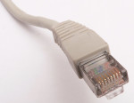
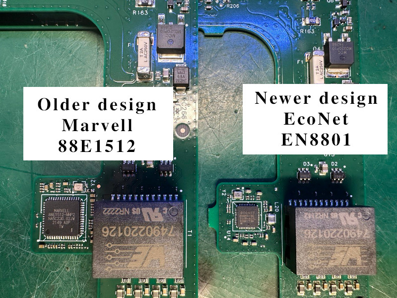

Many people are asking about Ethernet on the Gen2 Starlink router. My article about the Ethernet adapter is also quite popular.
Let’s see how we can bring this port back to the router.
Ethernet pins
Currently, there are two router versions with two different Ethernet PHY ICs.
An older version uses Marvell 88E1512, and the newer is EconNet/Airoha (MediaTek subsidiary) EN8801.
In both cases, the Ethernet PHY is connected directly to the proprietary SPX connector inside the router.

The single connector is used for the AUX Ethernet data and Dishy Ethernet (WAN) + Dishy PoE. There is no AUX Ethernet magnetics on the board. Everything is in the external adapter.
Marvell 88E1512 variant
{kind=link}
It’s great that there are test points around the connector. We can easily trace and map these points. Let’s use the connector pinout from the adapter article.
{kind=link}
EN8801 88E1512 variant
Unfortunately, the design was changed, and no test pins were exposed. I hope it’s not because SpaceX reads my posts 🙂
{kind=link}
The only way to connect is to use Ethernet PHY pins. It might be tricky due to the size of the chip, but still doable.
Here is the pinout:
{kind=link}
Now it’s possible to add the AUX Ethernet port circuit. The connection principle is the same for both types of routers.
First approach: Ethernet magnetics + connector
I designed a simple 1G Ethernet module (EtherMod) that can be connected to the test points described above.
The module is built around H6096NLT 10/100/1000 Base-T transformer. Also, I added TVS diodes for the PHY IC protection.

The board is compact and could be placed somewhere inside the router. I hope 🙂
{kind=link}
Connection is easy for the Marvell variant:
{kind=link}
For the EcoNet EN8801, connect to the appropriate pins from the image above.
Download Starlink EtherMod Gerber
Second approach: Modular Ethernet connector with built-in transformer
It’s possible to replace the Ethernet transformer and connector pair with a single combined connector (built-in transformer). Like this one.
Such a connector might be more expensive, but it eliminates most capacitors and resistors. This makes the board more straightforward and compact.
Unfortunately, I couldn’t find any suitable connector without built-in LEDs.
{kind=link}
Download Starlink EtherMod Lite Gerber
The connection method is the same:
{kind=link}
For the EcoNet EN8801, connect to the appropriate pins from the image above.
Practical implementation
Here is an example of the implementation.
{kind=link}
{kind=link}
I decided to integrate the Ethernet into the router’s stand.
{kind=link}
{kind=link}
Thanks for reading.
SP2502LBTG status: Backordered until 2023! Thanks again, chip shortage.
I guess now we know why they removed the ethernet port from the router (and also why the ethernet adapters are so backordered for everyone, and also why there’s a proprietary adapter now instead of Cat6): SpaceX just doesn’t have the parts to use Ethernet! I don’t know much about TVS diode arrays; maybe there’s similar parts you can get or maybe you can cobble something equivalent together using individual diodes. How much lightning protection do you really need for Ethernet, anyway? Maybe the SP2502LBTG is overkill for practical usage. Or maybe I have some old Ethernet cards laying around that I can steal from…
Regardless, thanks for the writeup and the gerbers! At the very least we can join SpaceX in waiting for parts now.
Thank you for your comment 🙂
You can omit the TVS diodes array, it’s not critical for the Ethernet functionality. But it’s important for robust and protection. Sure, it’s up to you to use these diodes or not.
It’s always possible to find some alternative. For example:
https://eu.mouser.com/ProductDetail/Littelfuse/SP03-3.3BTG?qs=mOWClclLREbj9Th7xb5B8w%3D%3D
or
https://eu.mouser.com/ProductDetail/Littelfuse/SP4031-02BTG?qs=w%2Fv1CP2dgqoUXvsFNNz%252B4Q%3D%3D
(simpler variant)
I’m sure that SpaceX decision had nothing to do with chip shortage.
Thank you very much! I might just give those a try.
Hi,
Is it possible to branch from the middle of the network cable without opening the router and use the network port?
Regards,
Amir
Hello,
It’s not possible. There are no required wires inside the Router <-> Dishy cable.
This method that you have explained does not cause the packets lost?
Should we activate the byepass starlink Wifi router tick in the router settings?
In this case, the user receives IP from dhcp server the dish or from the wifi router again?
No packet loss. You can activate bypass mode to make a “direct” connection between the Dish and your equipment. WiFi will be disabled.
You can connect a single client or your custom router using the bypass mode.
This is awesome! Thanks for the inspiration. My router board does not have the same Ethernet connections – some of the pads are missing. 🙁
Hi, great job.
Can you explain the need for C9 and R5 on the EtherMod Lite ? Can I do without and like direct the ground ?
Thanks 🙂
Hello. You can’t connect transformer’s central taps to the ground or any voltage source. These pins should be coupled to ground via capacitor and current-limiting resistor. This is required by the PHY IC to bleed HF noise to the ground.
hello is there any way to make an ethernet port without the ethernet mod card?
Does Gerber EtherMod Lite have a chip?
Hello. Both boards have transformers and a few passive components.
Unfortunately, you can add the port directly without any Ethernet transformer.
I understand, the problem is that I can’t find these boards with transformers, would you have somewhere to buy them?
https://datasheetspdf.com/pdf-file/1297008/GROUP-TEK/HST-2027DAR/1, what is the possibility of building using one of these?, in this case being a part for a switch?